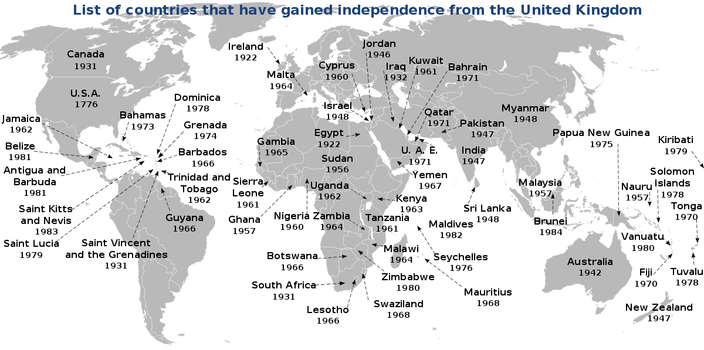
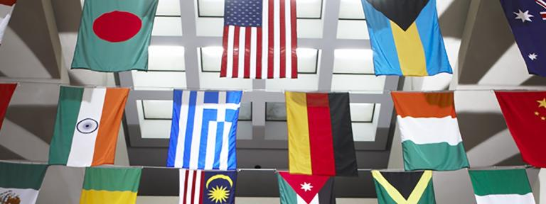

COUNTRIES THAT GAINED FREEDOM FROM UK

countries that were occupied by Britain
countries that were occupied by Britain

Country flags
India's independence flag
Colonies, Protectorates and Mandates:
- Afghanistan: It gained independence on 19th August 1919
- Antigua and Barbuda: It gained independence on 1st November 1981
- The Bahamas: It gained independence on 10th July 1973
- Bahrain: It gained independence on 15TH August 1971
- Barbados: It gained independence on 30th November 1966
- Belize: It gained independence on 21st September 1981
- Botswana: It gained independence on 30th September 1966
- Brunei: It gained independence on 1st January 1984
- Cyprus: It gained independence on 16th August 1960
- Dominica: It gained independence on 3rd November 1978
- Egypt: It gained independence on 28th February 1922
- Eswatini: It gained independence on 6th September 1968
- Fiji: It gained independence on 10th October 1970
- The Gambia: It gained independence on 18th February 1965
- Ghana: It gained independence on 6th March 1957
- Grenada: It gained independence on 7th February 1974
- Guyana: It gained independence on 26th May 1966
- India: It gained independence on 15th August 1947
- Iraq: It gained independence on 3rd October 1932
- Israel: It gained independence on 14th May 1948
- Jamaica: It gained independence on 6th August 1962
- Jordan: It gained independence on 25th May 1946
- Kenya: It gained independence on 12th december 1963
- Kiribati: It gained independence on 12th July 1979
- Kuwait: It gained independence on 19th June 1961
- Lesotho: It gained independence on 4th October 1966
- Libya: It gained independence on 24th December 1951
- Malawi: It gained independence on 6th July 1964
- Malaysia: It gained independence on 31st August 1957
- Maldives: It gained independence on 26th July 1965
- Malta: It gained independence on 21st September 1964
- Mauritius: It gained independence on 12th March 1968
- Myanmar: It gained independence on 4th January 1948
- Nauru: It gained independence on 31st January 1968
- Nigeria: It gained independence on 1st October 1960
- Oman: It gained independence on 20th December 1970
- Pakistan: It gained independence on 14th August 1947
- Qatar: It gained independence on 3rd September 1971
- Saint Lucia: It gained independence on 22nd February 1979
- Saint Kitts and Nevis: It gained independence on 19th September 1983
- Saint Vincent and the Grenadines: It gained independence on 27th October 1979
- Seychelles: It gained independence on 29th June 1976
- Sierra Leone: It gained independence on 27th April 1961
- Soloman Islands: It gained independence on 7th July 1978
- Somaliland: It gained independence on 26th June 1960
- South Yemen: It gained independence on 30th November 1967
- Sri Lanka: It gained independence on 4th february 1948
- Sudan: It gained independence on 1st january 1956
Evolution of Dominions to Independence:
- Australia: It gained independence on 3rd March 1986
- Canada: It gained independence on 17tH April 1982
- Dominion of Newfoundland: It gained independence on 18th April 1949
- Ireland: It gained independence on 17th April 1982
- South Africa: It gained independence on 21st May 1961
- New Zealand: It gained independence on 13th December 1986
Former British Crown Colonies that declared independence then later restored British rule:
- Anguilla: It gained independence on 12th July 1967
- Rhodesia: It gained independence on 11th November 1965
Military occupations that did not retain the pre-war central government:
- Iraq: It gained independence on 28th June 2004
British Overseas Territories independence/ sovereignty referendums
- Bermuda: It gained independence on 16th August 1995
- Gibraltar: It gained independence on 7th November 2002
- Falkland Islands: It gained independence on 11th March 2013
Territories which were relinquished to another sovereign state
- Northern Cameroons: It gained independence on 1st October 1961
- Southern cameroons: It gained independence on 1st October 1961
- British Occupation Zone in Germany: It gained independence on 23rd May 1949
- Hong Kong: It gained independence on 30th June 1997
- North Borneo: It gained independence on 16th September 1963
- Sarawak: It gained independence on 16th September 1963
- Singapore: It gained independence on 16th September 1963
Countries of the United Kingdom that has votes against independence:
- Northern Ireland
- Scotland